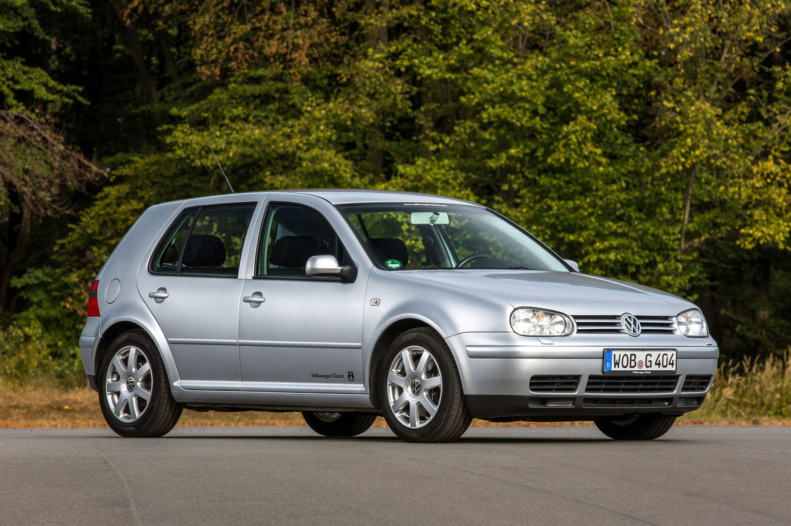

Volkswagen Golf IV

Volkswagen Golf IV je kompaktní hatchback vyráběný mezi lety 1997 až 2003.
Je známý kvalitním zpracováním, pohodlím a širokou nabídkou motorů.
Díky tomu je často doporučován jako první auto.
V čem je auto dobré
- kvalitní zpracování interiéru
- pohodlná jízda
- široká nabídka motorů
- dostupné náhradní díly
- dobrá bezpečnost
Benzínové motory
- 1.4 – 55 kW, 59 kW
- 1.6 – 74 kW, 77 kW
- 1.8 – 92 kW
- 1.8T – 110 kW, 132 kW
- 2.0 – 85 kW
- 2.3 VR5 – 110 kW, 125 kW
- 2.8 V6 – 150 kW
- 3.2 V6 (R32) – 177 kW
Naftové motory
- 1.9 SDI – 50 kW
- 1.9 TDI – 66 kW, 74 kW, 81 kW, 85 kW, 96 kW, 110 kW
Golf IV nabízí velké množství motorů od úsporných dieselů až po sportovní verze.
Pro první auto se nejčastěji doporučují motory 1.6 nebo 1.9 TDI,
které mají dobrý poměr výkonu a spotřeby.
← Zpět na hlavní stránku